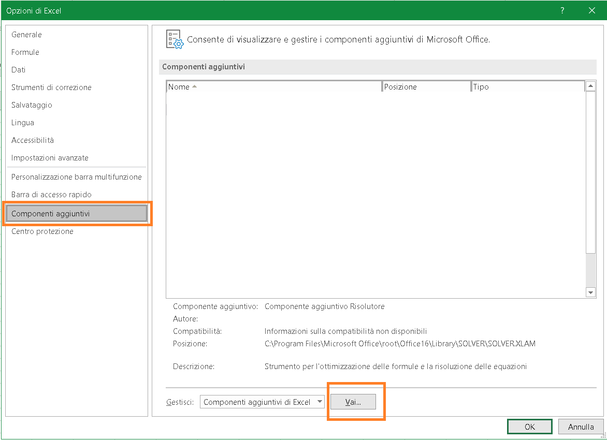

Strumenti di analisi fornisce molte funzionalità utili, questo componente aggiuntivo mette a disposizione alcune funzionalità di analisi avanzate, normalmente non disponibili nel software.
Istallare il componente aggiuntivo Strumenti di analisi
Strumenti di analisi è un componente aggiuntivo, ovvero è un elemento che, inizialmente, non può essere richiamato dalla barra multifunzione. Prima di impiegarlo dovrete quindi installarlo. Fate clic sulla scheda Dati: se vi trovate il gruppo Analisi, con il comando Analisi dati, significa che Strumenti di analisi è già installato. Altrimenti, ecco come installarlo.
-
Selezionate File > Opzioni per aprire la finestra di dialogo Opzioni.

-
Nella finestra di dialogo Opzioni di Excel, fate clic sulla scheda Componenti aggiuntivi.
-
Nella parte inferiore della finestra di dialogo Opzioni, selezionate dall’elenco a discesa Gestisci l’opzione Componenti aggiuntivi di Excel, quindi fate clic su Vai. Verrà visualizzata la finestra di dialogo Componenti aggiuntivi.

-
Nella finestra di dialogo Componenti aggiuntivi, selezionate Strumenti di analisi.
-
Fate clic su OK per chiudere la finestra di dialogo Componenti aggiuntivi.
NB Per includere le funzioni di Visual Basic, Applications Edition (VBA) per il componente aggiuntivo Strumenti di analisi, è possibile caricare il componente aggiuntivo Strumenti di analisi - VBA con le stesse modalità con cui viene caricato il componente aggiuntivo Strumenti di analisi. A tale scopo, nell'elenco Componenti aggiuntivi disponibili selezionare la casella di controllo accanto a Strumenti di analisi - VBA.
Utilizzo degli strumenti di analisi
Per richiamare il menu dove sono elencati questi strumenti, occorre selezionare
Dati > Analisi > Analisi dati (Alt A Y1). Verrà visualizzata la finestra di dialogo Analisi dati:
Gli strumenti presenti in questo componente aggiuntivo sono:
L’analisi della varianza
L’analisi della varianza è un test statistico, che determina la significatività che due o più campioni provengono dalla stessa popolazione:
-
Ad un fattore: un’analisi unidirezionale della varianza, con un solo campione per ogni gruppo di dati.
-
A due fattori con replica: un’analisi bidirezionale della varianza, con più campioni (o repliche) per ogni gruppo di dati.
-
A due fattori senza replica: un’analisi bidirezionale della varianza, con un singolo campione per ogni gruppo di dati.
Correlazione
Produce la matrice di correlazione tra le variabili presenti nel set di dati.
Covarianza
Produce la matrice di varianza e covarianza tra le variabili presenti nel set di dati.
Statistica descrittiva
Lo strumento di analisi Statistica descrittiva produce una tabella che descrive i dati con alcune funzioni statistiche standard.
Smorzamenti esponenziale
Lo smorzamento esponenziale è una tecnica statistica per prevedere i dati sulla base di un punto dati precedente e su un punto dati previsto. Potete specificare il fattore di smorzamento, che è un valore compreso tra 0 e 1. Questo fattore determina la ponderazione relativa del punto dati precedente e del punto dati previsto. Si può anche richiedere di produrre gli errori standard e un grafico.
Test F a due campioni per varianza
Il test F è un test statistico che permette di confrontare le varianze di due popolazioni.
Analisi di Fourier
Lo strumento Analisi di Fourier esegue una trasformata rapida di Fourier di un intervallo di dati. Impiegando lo strumento Analisi di Fourier, potete trasformare un intervallo limitato alle seguenti dimensioni: 1, 2, 4, 8, 16, 32, 64, 128, 256, 512 o 1024 punti dati. Risulta molto utile per individuare outlier, captare il rumore di una serie e per individuare citeri di campionamento.
Istogramma
Lo strumento di analisi Istogramma è utile per produrre grafici di distribuzione dei dati e istogrammi.
Media mobile
Lo strumento di analisi Media mobile permette di trarre tendenze da una serie di dati che manifestano un’elevata variabilità. Questa procedura è normalmente applicata a un grafico. Excel calcola la media mobile di un numero specificato di valori. In molti casi, la media mobile permette di individuare tendenze che altrimenti sarebbero celate dal rumore presente nella serie.
Generazione di un numero casuale
Lo strumento di analisi Generazione di un numero casuale permette di generare numeri pseudo-casuali specificando il tipo di distribuzione (uniforme, normale ...).
Rango e percentile
Lo strumento di analisi Rango e percentile crea una tabella che mostra il rango ordinale e percentile per ogni valore di un intervallo.
Regressione
Lo strumento di analisi Regressione calcola un’analisi di regressione dai dati del foglio di lavoro. Potete impiegare la regressione per analizzare le tendenze, prevedere valori futuri, creare modelli predittivi e, spesso, trovare relazioni in una serie di numeri solo apparentemente non correlati.
Campionamento
Lo strumento di analisi Campionamento genera un campione casuale traendolo da un intervallo di valori di input. Può essere utile per sintetizzare uno sterminato database, riducendo i dati a un loro sottoinsieme significativo.
Test t
Test t stabilisce se esiste una differenza significativa a livello statistico tra due piccoli campioni.
Test z: due campioni per medie
Il Test t è impiegato per piccoli campioni; il Test z è impiegato per campioni di grandi dimensioni o intere popolazioni. È necessario conoscere le varianze di entrambi gli intervalli di input.